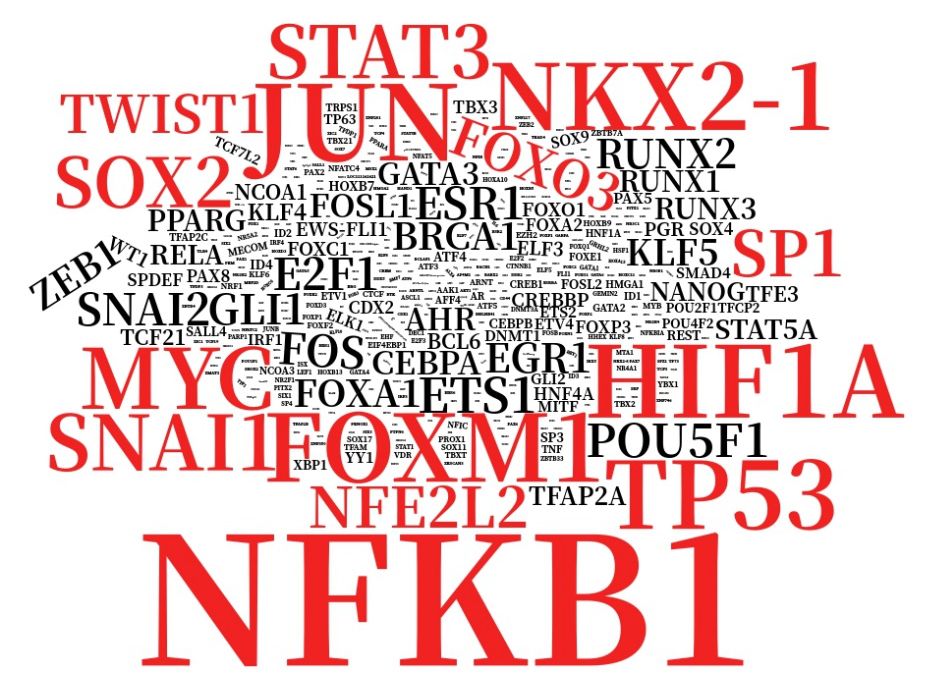
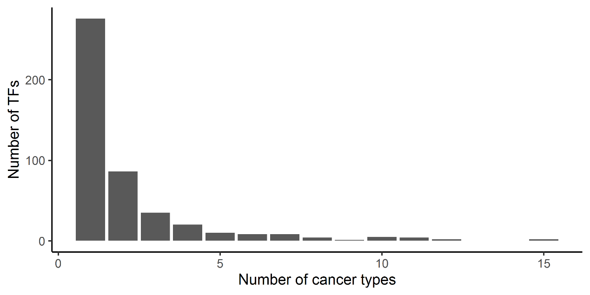
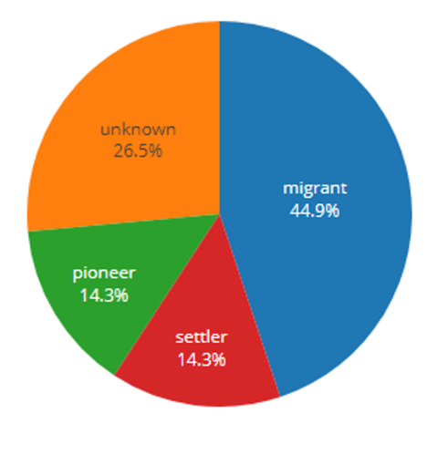
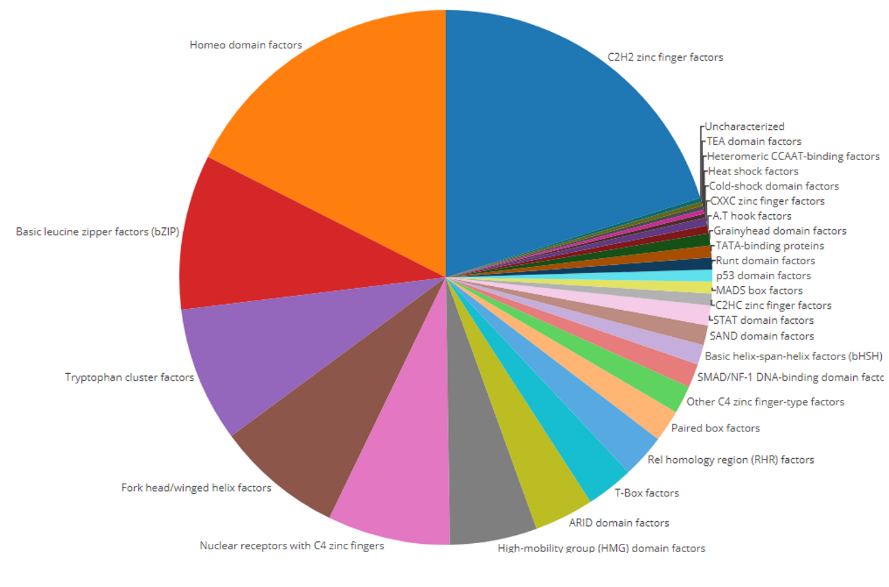

1.Top transcription factors in TFcancer

2.Statistics of the number of transcription factors studied in the number of
different cancer types.
Most transcription factors were studied in one or two types of cancers.

3.Distribution of chromatin interaction mode of 461 transcription factors.
Most studies focused on the TFs of migrant chromatin regulation mode.

4.Family distribution of 461 transcription factors.
Most TFs in these researches are members of C2H2 zinc finger factors family,
which is the most abundant class of DNA binding domains found in
human transcription factors.
